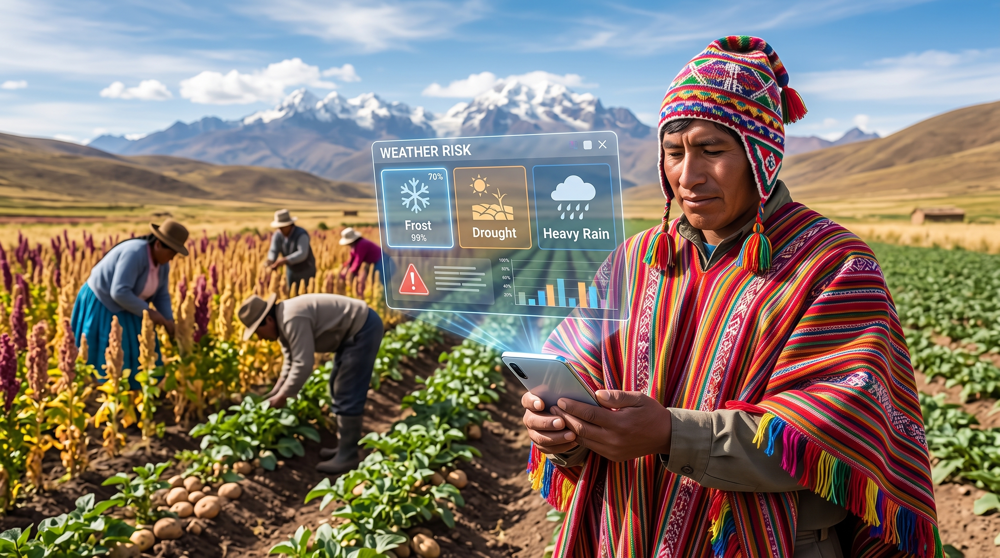
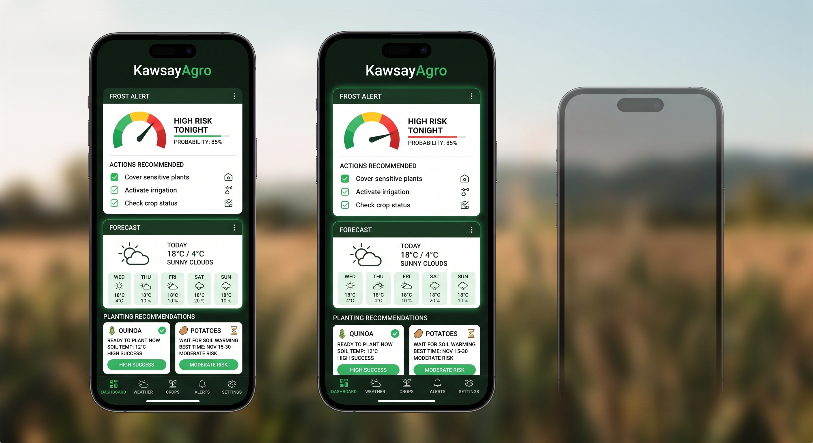
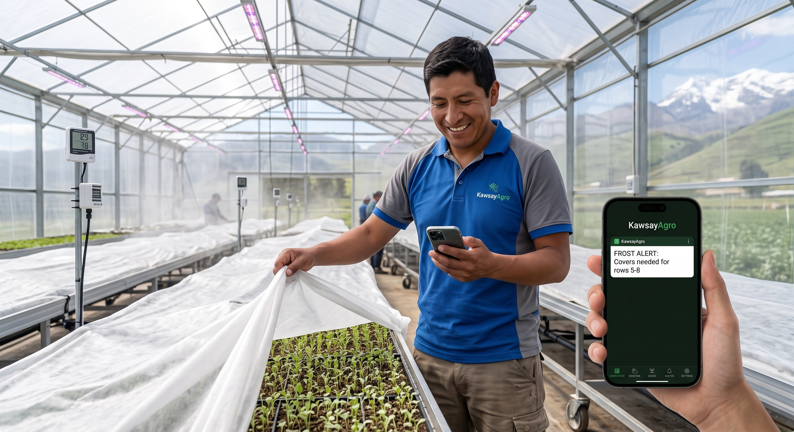
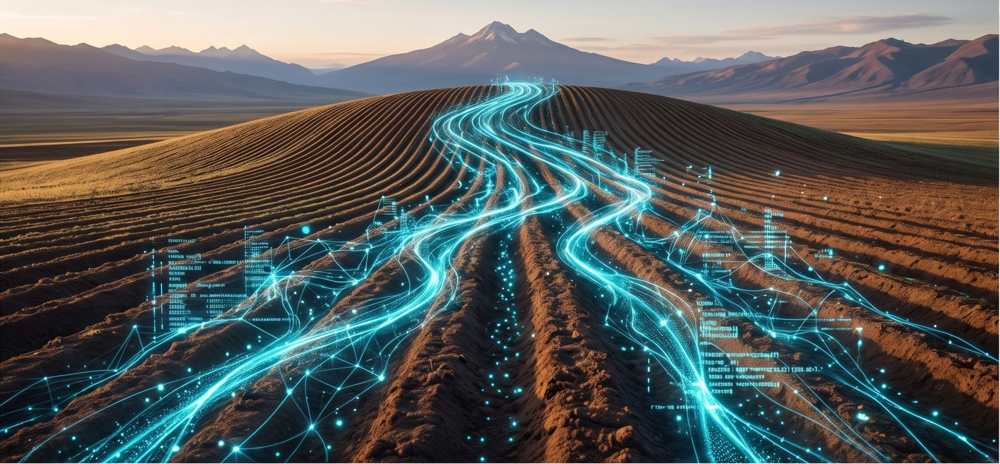
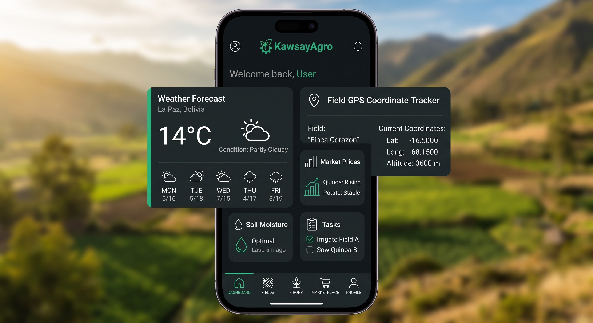
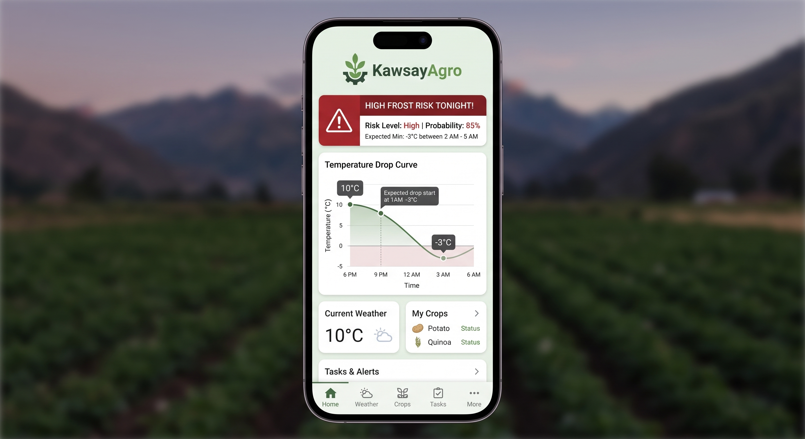
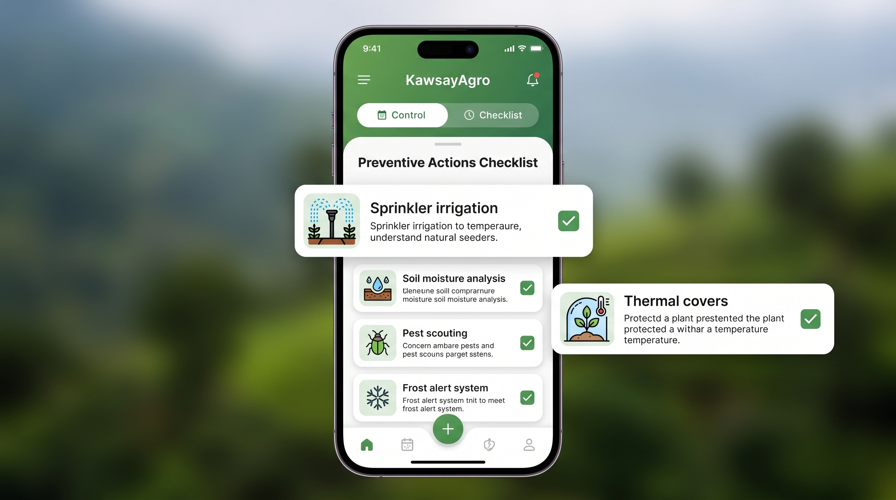

El Relato y su Adaptación
El Relato Elegido
Título: La Leyenda de la Quinua (Tradición oral andina boliviana)
Fuente: Recopilación de mitos y tradiciones del Altiplano boliviano.
Descripción: Kari, un joven agricultor aymara, enfrenta una época de severas sequías y heladas que amenazan la supervivencia de su ayllu. Tras ser aconsejado por un anciano Yatiri, vigila la cumbre en la noche más fría, descubriendo la quinua: una semilla sagrada enviada por los astros capaz de resistir el clima más hostil.
La Adaptación Contemporánea
Conexión: La helada del relato representa la vulnerabilidad histórica ante la incertidumbre meteorológica. La adaptación contemporánea transforma la vigilia nocturna y la lectura de las estrellas en una plataforma de monitoreo y alerta temprana, donde los algoritmos predictivos actúan como el nuevo mentor técnico del agricultor.
Experiencia Audiovisual
Video oficial en YouTube: Ver en YouTube (Duración: 2:00)
Estructura Narrativa
Camino del Héroe (10 Etapas)
| Etapa del Camino | Aplicación en el Relato |
|---|---|
| 1. Mundo ordinario | Kari cultiva la tierra en una comunidad del altiplano siguiendo las tradiciones ancestrales. |
| 2. Llamado | Heladas y sequías imprevistas amenazan con destruir la cosecha y traer hambruna al ayllu. |
| 3. Duda | Kari enfrenta incertidumbre: no sabe cómo anticipar el clima ni cómo salvar a su pueblo. |
| 4. Mentor o ayuda | El sabio Yatiri le entrega un amuleto y le enseña a descifrar las señales del cielo nocturno. |
| 5. Cruce del umbral | Kari decide subir a la cumbre sagrada para vigilar durante la noche más fría del año. |
| 6. Pruebas | Enfrenta el viento helado, la soledad y el agotamiento en la cima altiplánica. |
| 7. Gran desafío | En la madrugada más gélida, descubre la presencia mística de la estrella Chaska. |
| 8. Recompensa | Recibe la semilla de la quinua dorada y el saber sobre los ciclos exactos de siembra. |
| 9. Regreso | Desciende a su comunidad al amanecer llevando consigo el grano de oro. |
| 10. Transformación | El ayllu siembra la quinua, supera la crisis y adopta la observación activa del clima. |
Guion Breve (120 Segundos)
Parte A: Relato Original (0:00 - 1:15)
[0:00 - 0:12]: "En el corazón del altiplano boliviano, el joven Kari vivía en armonía con su tierra, cultivando el sustento de su comunidad tal como lo hicieron sus ancestros."
[0:12 - 0:25]: "Pero un año, heladas implacables y sequías imprevistas amenazaron con arruinarlo todo. La incertidumbre se apoderó del ayllu: ¿cómo anticiparse a un clima cada vez más hostil?"
[0:25 - 0:38]: "El sabio de la comunidad le aconsejó: 'La respuesta no está en lamentar el frío, sino en comprender las señales del cielo'. Kari decidió escuchar."
[0:38 - 0:52]: "Cruzando el umbral de su aldea, subió a la cumbre sagrada. Soportó la noche más fría, desafiando el cansancio y el aislamiento para descifrar los ciclos de la naturaleza."
[0:52 - 1:05]: "Al alba, la sabiduría ancestral se reveló: descubrió el grano dorado de la quinua, una semilla sagrada capaz de resistir la helada más dura si se sembraba bajo los signos correctos."
[1:05 - 1:15]: "Kari regresó a su pueblo con la semilla y el conocimiento. La comunidad no solo venció el hambre, sino que aprendió a interpretar los patrones del clima para proteger su futuro."
Parte B: Reinterpretación - Desarrollo de Software (1:15 - 1:45)
[1:15 - 1:25]: "Hoy, los agricultores enfrentan el mismo desafío: la incertidumbre climática. Desde el Desarrollo de Software, creamos KawsayAgro, una plataforma web y móvil offline-first que digitaliza este saber ancestral."
[1:25 - 1:35]: "El productor registra su parcela; el sistema procesa datos meteorológicos y predictivos locales; y en segundos entrega una alerta clara con recomendaciones precisas para proteger la siembra."
[1:35 - 1:45]: "Transformamos la intuición y los datos complejos en decisiones simples y oportunas, asegurando que la tecnología sea el nuevo mentor de nuestra soberanía alimentaria."
Parte C: Cierre y Créditos (1:45 - 2:00)
[1:45 - 1:55]: "El relato de ayer es la solución digital de hoy. Desarrollar software es crear herramientas que preserven la vida y el conocimiento de nuestras comunidades."
[1:55 - 2:00]: [Tarjetas cinematográficas de créditos y enlace público web]
Storyboard Visual (10 Escenas)

1. Mundo Ordinario: Kari en el altiplano.

2. Llamado / Duda: Helada y cultivos dañados.

3. El Mentor: El Yatiri entrega el amuleto.

4. Cruce de Umbral: Vigilia nocturna.

5. Gran Desafío: El grano de quinua al alba.

6. Transformación: Cosecha y abundancia.

7. Problema Actual: Productor con smartphone.

8. Sistema KawsayAgro: UI de monitoreo.

9. Toma de Decisión: Acción preventiva en campo.

10. Cierre Conceptual: Sabiduría y datos digitales.
Mención: Desarrollo de Software
Producto propuesto: KawsayAgro (PWA Offline-First)
Flujo Funcional del Sistema
1. Usuario: Productor agrícola del altiplano boliviano.
2. Entrada: Coordenadas GPS de la parcela, tipo de cultivo (Quinua Real) y etapa fenológica registrada en la app.
3. Proceso: Motor de reglas agronómicas que cruza pronósticos de temperatura, punto de rocío y humedad local (incluso sin conexión mediante IndexedDB).
4. Resultado: Semáforo de riesgo de helada con recomendaciones inmediatas (riego preventivo, cubiertas térmicas).
Mockups de la Solución (3 Pantallas)

1. Dashboard: Estado de parcela y clima.

2. Alertas: Pronóstico y nivel de riesgo.

3. Decisiones: Checklist de prevención técnica.
Uso Documentado de Inteligencia Artificial
Herramientas Utilizadas
ChatGPT / Gemini (Estructuración del guion y modelado conceptual), Midjourney / Stable Diffusion (Storyboard y Mockups), CapCut (Edición y montaje).
Ciclo de Iteración Documentado
| Fase del Proceso | Detalle de la Ejecución |
|---|---|
| Prompt Inicial | A bolivian man holding quinoa seeds in the cold night, high quality, realistic. |
| Resultado Inicial | La IA generó a un sujeto con rasgos no andinos, sosteniendo espigas de trigo sobre un fondo de estudio genérico. |
| Error / Inconsistencia | Falta de identidad cultural aymara, anacronismo botánico (trigo en lugar de quinua) y ausencia del paisaje altiplánico. |
| Corrección Aplicada | Close-up shot of a young indigenous Bolivian Aymara farmer wearing an authentic handwoven poncho, hands cupping glowing raw golden quinoa grains (Chenopodium quinoa) at dawn, frosted ground, Cordillera Real in background, cinematic lighting, 8k. |
| Resultado Final | Representación visual contextualmente fiel, grano botánicamente preciso e iluminación matutina realista. |
Conclusiones del Proyecto
1. Respeto al Contexto y Raíz Cultural
El desarrollo de software no debe irrumpir artificialmente en relatos históricos ni imponer tecnología donde no existía. La verdadera innovación consiste en identificar el problema humano de fondo (la vulnerabilidad climática y la búsqueda de previsibilidad) y construir puentes conceptuales que respeten la identidad andina.
2. El Software como Facilitador de Decisiones
La propuesta de KawsayAgro traslada la sabiduría observacional de Kari a un entorno digital accesible. Diseñar con enfoque offline-first y flujos simples (Entrada → Proceso → Resultado) demuestra que la ingeniería de software cumple su fin máximo cuando transforma datos complejos en acciones preventivas reales para la comunidad.
3. Uso Crítico de Herramientas de IA
El proceso creativo evidenció que la Inteligencia Artificial requiere una dirección humana rigurosa. Sin una formulación técnica y culturalmente consciente de los prompts, los modelos generativos tienden a reproducir sesgos y anacronismos botánicos. El refinamiento iterativo fue indispensable para lograr autenticidad visual.
4. Narrativa y Estructura Audiovisual
La aplicación de las 10 etapas del Camino del Héroe permitió estructurar un video de 2 minutos que equilibra el peso emocional del relato tradicional con el impacto técnico de la mención. La tecnología se convierte así en la recompensa y el motor de transformación contemporáneo.